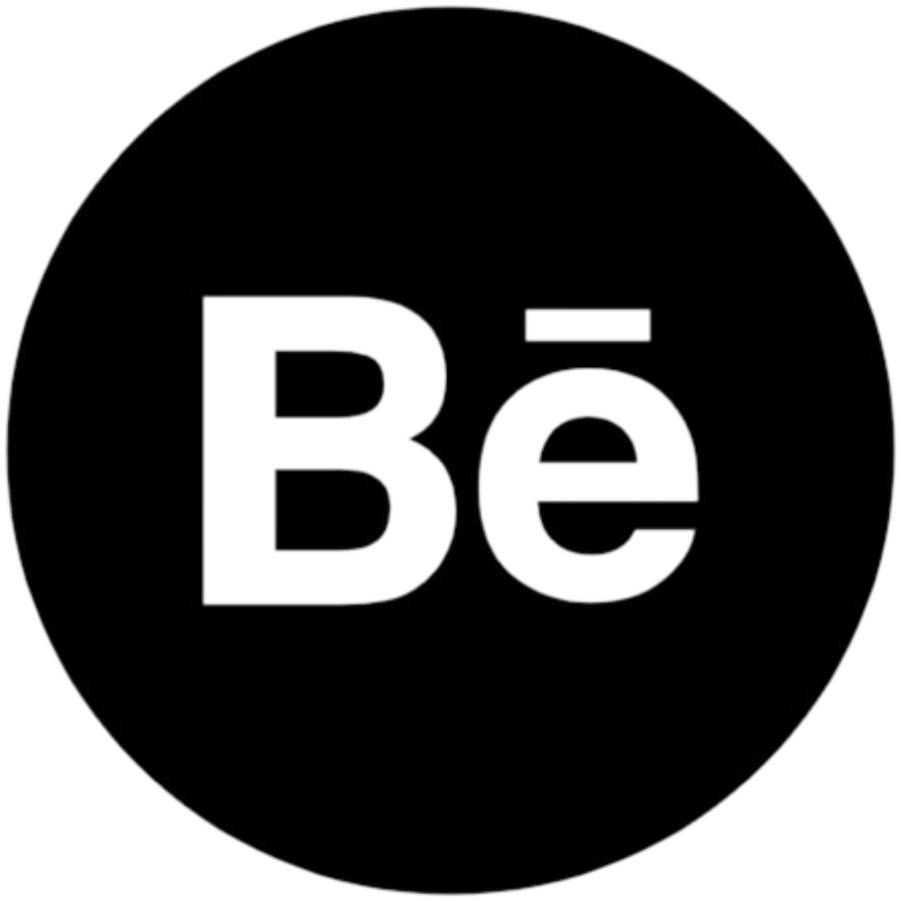
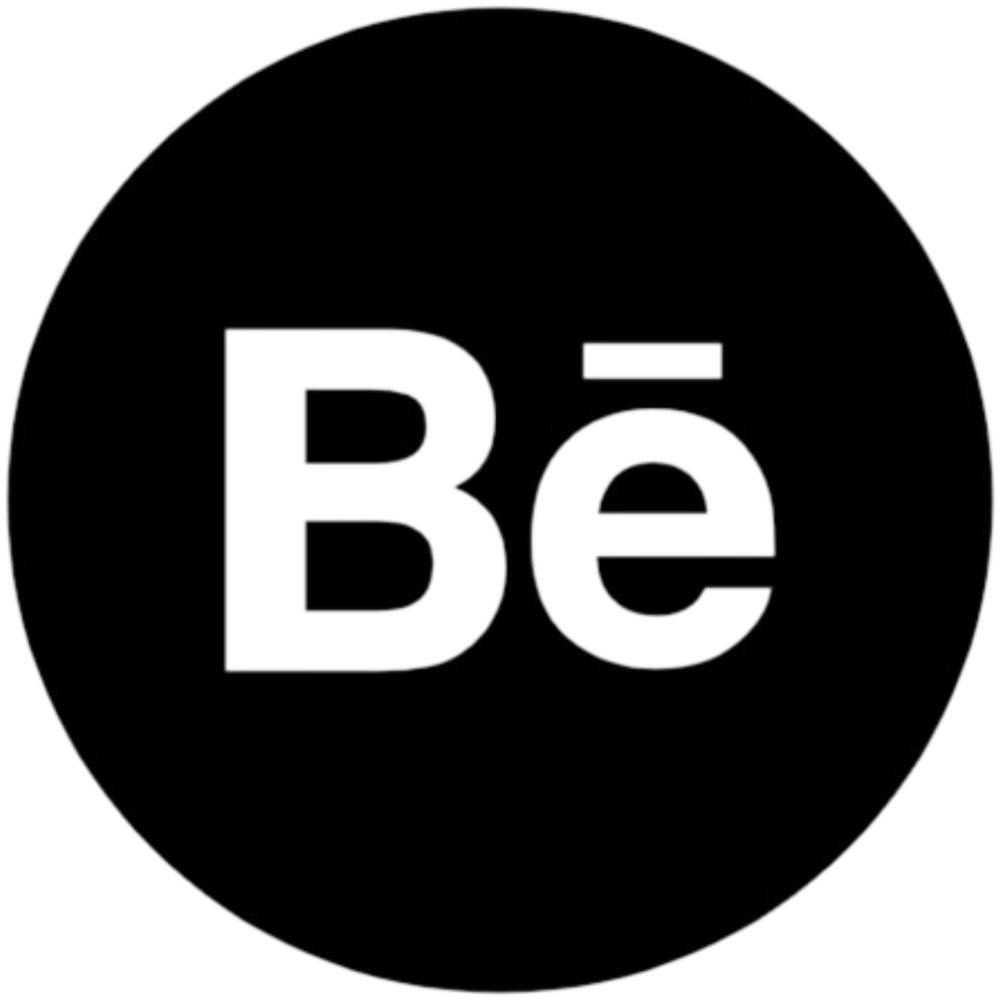
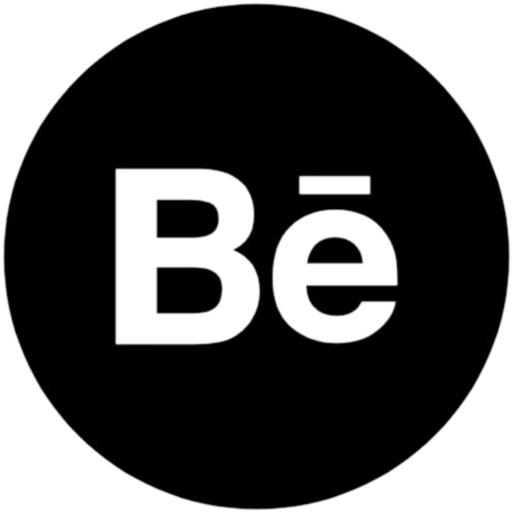

Strategic Planning

Hello, I'm
Ayush Prabhat
Fellow : Teach for India

 

Hello, I'm
Fellow : Teach for India

Get to Know More

2 years
Fellow : Teach for India
B.A. (Honours)
Humanities &
Social Sciences
University of Delhi
Teach For India Fellow and Humanities and Social Sciences graduate dedicated to advancing educational equity. A storyteller driven by a core passion for facilitating voices of the unjust and explore the world we share together.
Explore My
Led a pivotal role in achieving substantial literacy gains, averaging 2 years in a first-year intervention classroom. Facilitated the transition of all students from emergent level, with 81% attaining grade-level or above proficiency.
Demonstrated noteworthy development in foundational numeracy skills across two consecutive years, Elevated proficiency from initial levels to an impressive 80%, Continual advancements are underway.
Collaborated with multiple stakeholders to enhance learning outcomes, elevating parental investment from 37% to 94%. Tailored diverse communication channels for optimized engagement.
Facilited a group of 15 fellows to discover their personal theory of change and explore movement building.
Spearheaded holistic initiatives to cultivate and improve classroom readiness for 30+ volunteers, Designed instructional programs for volunteer let growth. Identified pivotal opportunities for their professional growth.
Strategic Planning
Project Management
Data Driven Decision Making
Google Workspace
Ms Excel
Selected as a standout candidate from a pool of 130 through a rigorous selection process.
Mentored, coached, and significantly influenced the knowledge, skills, and mindsets of 14 fellows, positively impacting 550+ students through tailored support within our Community of Practice.
Developed comprehensive channels for need analysis, collecting detailed data, and analyzed it to formulate agendas. Collaborated with 14 Fellow Mentors and Grade Track Team, aligning sessions with diverse trends.
Ran sessions across 6 months to enhance teaching skills and refine content proficiency of year 1 intervention Instructors in Literacy and Numeracy. Engaged in bi-monthly Check-Ins to establish a resilient support system.
Capacity Building
Impact Assessment
Session Planning
Facilitation
Office 365
Need Analysis
Actively collaborated with the Elementary Track Team and diverse Program Managers to strategize and coordinate the planning of training spaces for 130+ elementary fellows in the city.
Executed and demonstrated various exemplary practices from my classroom to elevate learning outcomes for over 65 early elementary fellows, impacting 2000+ students across Delhi.
Led focused small group discussions to encourage depth in Early Elementary training spaces over the last 1.5 year.
Proactively utilized platforms to communicate the requirements and needs of early elementary classrooms in Delhi, streamlining the planning and design process for diverse enablers.
Project Coordination
Leadership
Communication
Trend Analysis
Instructional Design
Explore My
B.A. Honours (Humanities & Social Sciences)
Introduction To Humanities & Social Sciences
Art Of Communication
Impact Of Technology, Philosophical Implications
Research Methodology
History Of India:(1500-1600)
History Of India: (1750-1857)
Principles Of Macro Economics
Environmental Science
Project: Health of Women with Polycystic Ovary Syndrome
Perspective On Public Administration
Perspective On International Relations And World History
Human Resource Management
Introduction To Documentary: Technologies & Technique
Project: Narrativising Masculinities
Understanding Psychology
Psychology Of Peace
Foundation Of Industrial Organisation Psychology - I
Legal Literacy
Project: Visual Art And Hope
Applied Social Psychology
Foundation Of Industrial Organisation Psychology - II
Living In Media World
Project: Peer Relationship And Academic Outcomes
Introduction To Digital Humanities
Innovation Management
Counseling
Theoretical Debates In Humanities & Social Sciences
Browse My
Get In Touch